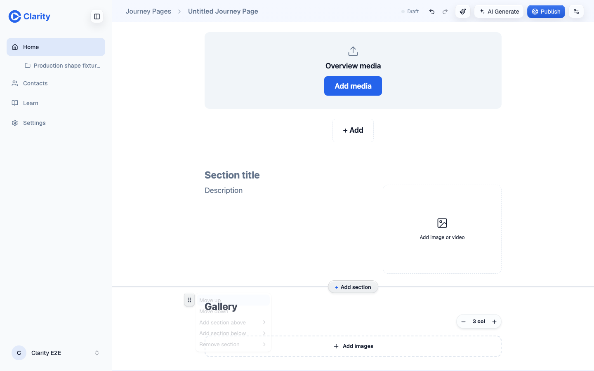
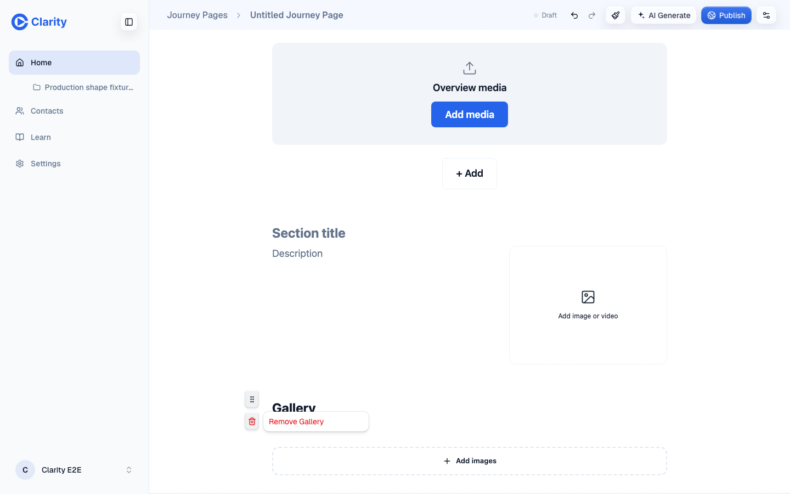
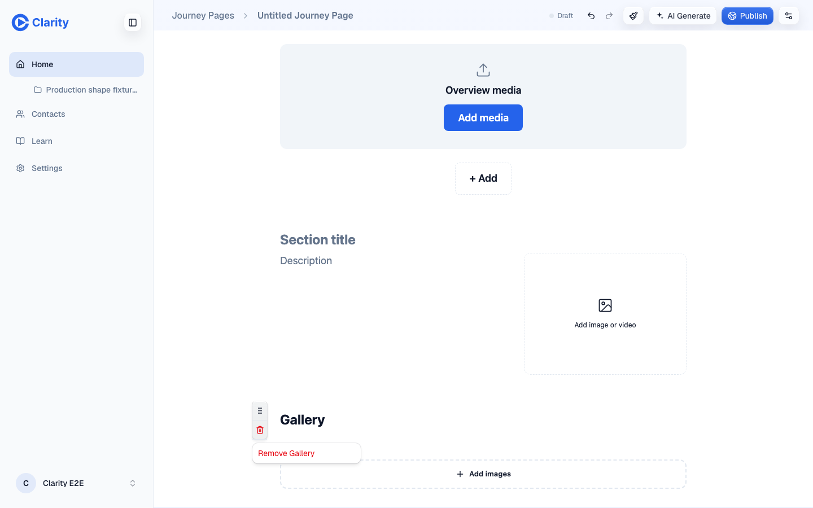
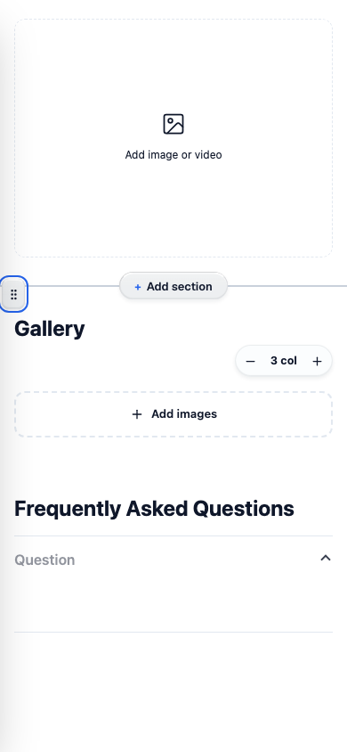
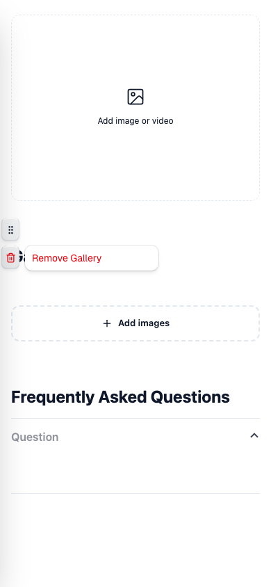
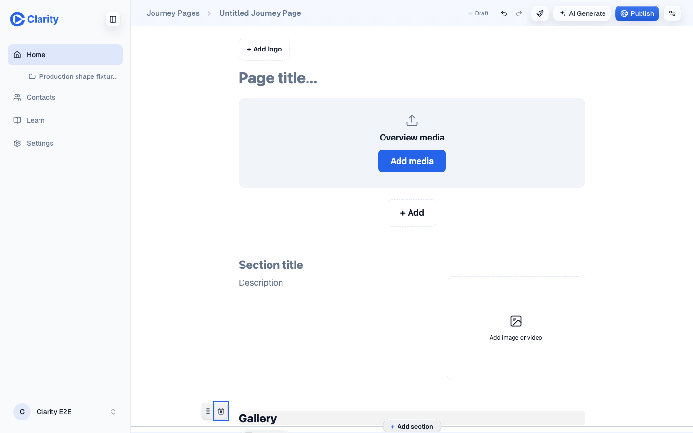
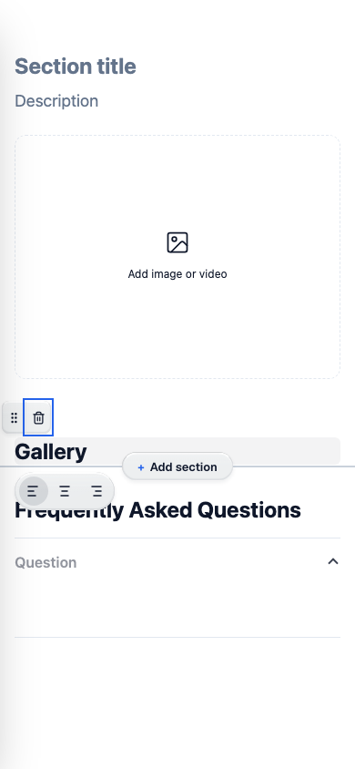
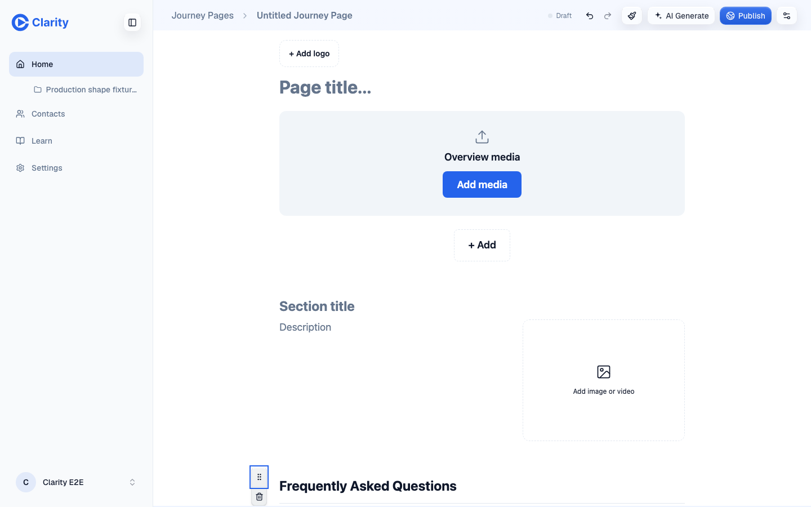
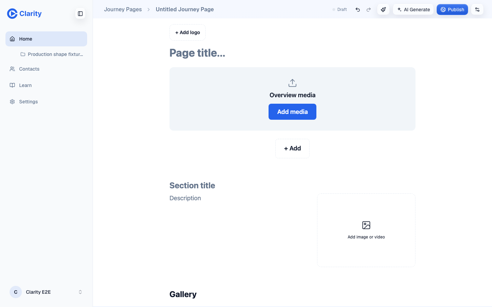
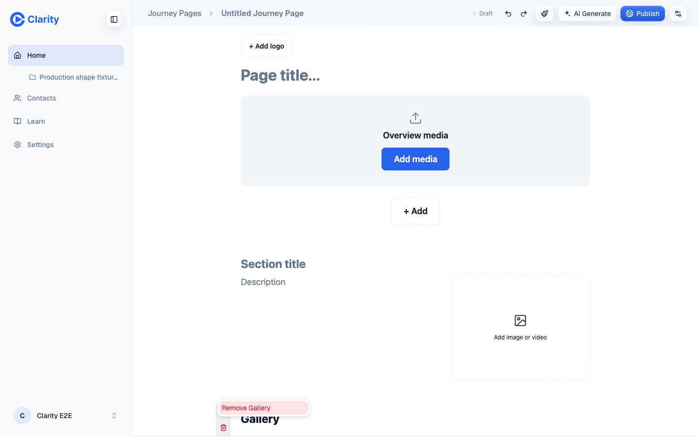

Three versions side by side. In the first, delete is hidden in the grip menu. The second had a separate floating trash button. The third, which is current, joins the grip and trash into one group with a shared surface and a hairline between them.
The group is vertical because it lives in the section's left gutter, the same way the summary table's row grips stand upright. When a section is shorter than the stack, the group lays out side by side so it never reaches the next section's group.
All shots come from the PR preview, using throwaway pages that were deleted afterwards. The commits are a578e6fd (before), 78efb1d8 (two buttons) and fe90aaf3 (group).
Desktop 1440: hovering a section
Before. Only the grip appears.Two buttons. A separate trash floats below the grip.Group. Grip and trash as one toolbar.
Desktop 1440: the delete step

Before. Grip menu with Remove section last and a submenu to go. Headless Chrome skips the menu blur, so it looks more see-through than it really is.

Two buttons. The confirm opened to the right.

Group. Trash turns red and the one-item confirm opens below.
Mobile 390

Before. Grip only.

Two buttons. The confirm covered the Gallery heading.Group. The confirm opens below, so the heading stays readable.
Group: short section, removed, undo, keyboard

Short section, desktop. A section forced to 60px tall gets a side-by-side group that ends 28px above the next one.

Short section, mobile. The same case at 390 wide.

Removed. Gallery is gone and FAQ moves up.

Undo. Undo brings Gallery back.

Keyboard. Tab from the grip lands on the trash and Enter opens the confirm. Escape keeps the section.